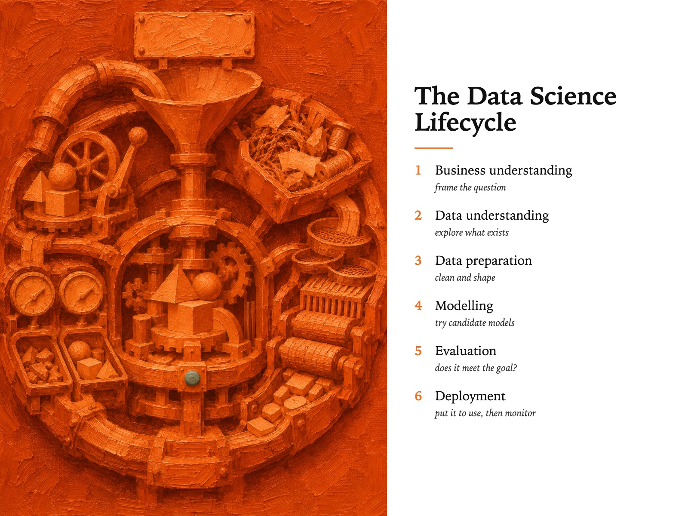

Style Vault / Stage / One Hue Flood
One Hue Flood
SV-058

Example: The data science lifecycle, set in One Hue Flood
In plain words
A painted subject - a person, an animal, an object - drowned in a single loud colour, where even the background is the same hue and the form is built only from lighter and darker thick paint. It feels bold and poster-like but still honest, like a portrait wearing a uniform colour. What makes it this style is one hue covering everything, with shape carried by value rather than outline. Best for: product launch hero images; keynote section dividers; linkedIn hook visuals; team or programme identity. Avoid: text or lettering generated inside the image.
Topics it fits
- Product launch hero imagesone loud hue owning the whole frame gives a launch a single colour people remember
- Keynote section dividersthe colour does the shouting while the subject stays honest, so each section can open with one strong image
- LinkedIn hook visualsa flooded single-colour thumbnail stands out in a busy feed before anyone reads the caption
- Team or programme identitylocking the hue across ten different subjects makes a series feel like one brand without a logo
Art style and layout
- core locked [one_hue_ground_included, value_not_contour, impasto_is_physical, one_thumbnail_relief, flat_frontal_light]
- the tension the colour is loud enough to be decoration and the subject is honest enough to be a portrait, and neither wins. A frame that resolves as pure decor has failed; so has a frame where the colour is just a filter over a normal painting
- one hue ground included THE CARD, and the thing MJ will break first. Its reflex is to paint a normal-coloured subject on a coloured background. Say the background is the same hue, in every prompt. If subject and ground separate cleanly into two colours, the frame is a miss
- value not contour no black outline anywhere. This is what separates it from SV-026 Loud Flat Lowbrow, which is built on coloured line and four flat hues. Here there is no line at all and one hue in a hundred values
- impasto is physical ask for
brush ridges,scraped back to the linen,paint standing proud. Without it MJ returns a smooth vector-ish gradient and the whole card collapses into a duotone filter - one thumbnail relief exactly one small note of neutral or complement - an eye, a rivet, a lit cigarette, a scrap of paper. One. Two and it becomes a two-colour illustration
- palette [run the hue at full range, e.g. orange "#2A0F04 shadow to "#F2C088 light with "#B4571C as the body; relief note in true neutral "#9A9A97 or the direct complement]
- negative space there is none, and that is deliberate. The flood is total. The relief note is the only place the eye can rest, which is why it can only be thumbnail-sized
- era reference monochrome oil portraiture, single-pigment studies, contemporary painterly figuration. Direction came from a single-hue portrait series seen on behance.net/galleries/illustration. Do not name a living artist - the reference stays out of every prompt
What must stay, what may change
subject - ten far-apart living things and objects (a boxer mid-guard, a heron, a dropped bicycle, an old woman laughing, a diesel engine, a jellyfish, a folded flag, a wolfhound, a pair of work boots, a child asleep). NOT ten portraits. The hue stays locked across all ten. Palette is the second pass, never the first - moving the hue while the subject sits still is the inversion she rejected on 2026-08-14
As JSON
Paste this into a prompt or a skill to reuse the style.
{
"id": "SV-058",
"name": "One Hue Flood",
"audience": [
"stage"
],
"category": [
"illustration-painting"
],
"format": [
"illustration",
"poster"
],
"maker": "diffusion",
"keep_and_swap": "**subject - ten far-apart living things and objects** (a boxer mid-guard, a heron, a dropped bicycle, an old woman laughing, a diesel engine, a jellyfish, a folded flag, a wolfhound, a pair of work boots, a child asleep). NOT ten portraits. The hue stays locked across all ten. **Palette is the second pass, never the first** - moving the hue while the subject sits still is the inversion she rejected on 2026-08-14",
"style_dna": {
"core_locked": "[one_hue_ground_included, value_not_contour, impasto_is_physical, one_thumbnail_relief, flat_frontal_light]",
"the_tension": "the colour is loud enough to be decoration and the subject is honest enough to be a portrait, and neither wins. A frame that resolves as pure decor has failed; so has a frame where the colour is just a filter over a normal painting",
"one_hue_ground_included": "THE CARD, and the thing MJ will break first. Its reflex is to paint a normal-coloured subject on a coloured background. **Say the background is the same hue, in every prompt.** If subject and ground separate cleanly into two colours, the frame is a miss",
"value_not_contour": "no black outline anywhere. This is what separates it from SV-026 Loud Flat Lowbrow, which is built on coloured line and four flat hues. Here there is no line at all and one hue in a hundred values",
"impasto_is_physical": "ask for `brush ridges`, `scraped back to the linen`, `paint standing proud`. Without it MJ returns a smooth vector-ish gradient and the whole card collapses into a duotone filter",
"one_thumbnail_relief": "exactly one small note of neutral or complement - an eye, a rivet, a lit cigarette, a scrap of paper. One. Two and it becomes a two-colour illustration",
"palette": "[run the hue at full range, e.g. orange \"#2A0F04 shadow to \"#F2C088 light with \"#B4571C as the body; relief note in true neutral \"#9A9A97 or the direct complement]",
"negative_space": "there is none, and that is deliberate. The flood is total. The relief note is the only place the eye can rest, which is why it can only be thumbnail-sized",
"era_reference": "monochrome oil portraiture, single-pigment studies, contemporary painterly figuration. Direction came from a single-hue portrait series seen on behance.net/galleries/illustration. **Do not name a living artist** - the reference stays out of every prompt"
},
"elements": {
"subject": "one living thing or object, frontal, close, filling most of the canvas. It is the only thing in the picture - no setting, no props, no narrative",
"composition": "subject and ground are the same colour, so the edges half-dissolve. The silhouette is found by value, not by contour. Centred and unfussy, cropped by the frame edge rather than posed inside it",
"light": "flat, frontal, undramatic. All the modelling comes from paint, not from lighting. This is the discipline that keeps it from becoming a moody portrait",
"palette": "**one hue for the entire canvas**, worked across its full value range from near-black to near-white, warm at the lit edges and cool in the recesses. Plus exactly one thumbnail-sized note of true neutral or the direct complement. Nothing else. No black line, no white highlight",
"material/texture": "thick oil impasto, brush ridges standing proud enough to catch real light, some scraped-back passages showing linen tooth. **Paint as a physical event**, not a smooth digital gradient",
"mood": "frank and warm. It looks straight at you. Not melancholic, not ironic - the colour is doing something generous",
"camera/render": "a painting photographed flat-on, edge to edge, no frame, no wall, no gallery. Canvas weave visible in the thin passages"
},
"palette_hex": [
"#2a0f04",
"#f2c088",
"#b4571c",
"#9a9a97"
],
"topics": [
{
"topic": "Product launch hero images",
"why": "one loud hue owning the whole frame gives a launch a single colour people remember"
},
{
"topic": "Keynote section dividers",
"why": "the colour does the shouting while the subject stays honest, so each section can open with one strong image"
},
{
"topic": "LinkedIn hook visuals",
"why": "a flooded single-colour thumbnail stands out in a busy feed before anyone reads the caption"
},
{
"topic": "Team or programme identity",
"why": "locking the hue across ten different subjects makes a series feel like one brand without a logo"
}
]
}